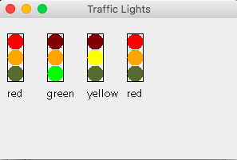

Remember not to create packages. Use the default package
10A
In this problem you will write several static methods to work with arrays and ArrayLists. Remember that a static method does not work on the instance variables of the class. All the data needed is provided in the parameters. Call the class ArrayUtil. Notice how the methods are invoked in ArrayUtilTester.
public static int min(int[] array) gets the minimum value in the array or Integer.MIN_VALUE if the array has no elementspublic static int contains(String[] array, String letter)gets the number of words in the array that starts with the given letter. The comparison is case-insensitive. 'A' and 'a' are counted as the same letterpublic static ArrayList<String> contains(String[] list, char letter)gets an ArrayList of all the strings in the given array that contain the given letter. The comparison is case-insensitive. 'A' and 'a' are counted as the same letterThe last two methods are an example of overloading.
Provide Javadoc. Look at the documentation produced for Util. (Click Project / Generate Javadoc) The Javadoc utility works on static methods, too.
10B
In this problem you will implement a solution using the design pattern for collecting objects. We are going to model a bank. A Bank uses an ArrayList to keep track of BankAccount objects. You will write the Bank class
The BankAccount class is provided for you. A BankAcount has a balance and a accountId.
A Bank has a constructor that takes no parameters. It needs to initialize the ArrayList used to collect bankAccounts
It has methods
add adds the specified BankAccount to the BanklargestFirst puts the BankAccount with the largest balance first in the list. If two have the same large balance, use the first one encountered in the listcontains determines if a BankAccount with a given accountId is in the Bank. Return true is so, otherwise falselist gets an ArrayList of the BankAccount accountIds in the Bank that have balances over the specified amount. list gets an ArrayList of the BankAccount accountIds in the BankProvide Javadoc.
10C
In this problem you are going write a class to model a traffic light that can cycle through colors, red, green, yellow. To do this, you will have to maintain the state of the traffic light. Maintaining state is one of the design pattern discussed in this week's lesson. The state of the TrafficLight indicates which light is lit. It changes every time the TrafficLight cycles.
Specification
TrafficLight will have a constructor that takes the x and y coordinates of the upper left hand corner of the rectangular part of the traffic light as parameters. The TrafficLight is black rectangle at the x,y coordinates with a width of 20 and a height of 60. There are red, green, and yellow circles inside the rectangle to look like a traffic light. The upper left hand corner of the red circle will be at same x,y coordinates as the box. The circles will touch the sides of the box and each other
Define an instance variable to hold the state (which light is lit). Make it an int. And define public constants for red, green, and yellow, named RED, GREEN, YELLOW (These will be ints also)
The constructor takes the x,y coordinates of the upper left hand corner of the TrafficLight as parameters and also sets the state of the light to red (using the constant).
Provide methods
public void cycle() changes the state (the color) in the following manner | If the state was | now it is |
|---|---|
| red | green |
| green | yellow |
| yellow | red |
public String getLight()gets the color (the current state) of the light as a string "red", "green" or "yellow"public void draw(Graphics2D g2) draws the traffic light and fills the circles with a different color when the light is on or off (Draw the rectangle first)| Color Name | On Color | Off RGB |
|---|---|---|
| red | Color.RED | 128,00,00 |
| green | Color.GREEN | 85,107,47 |
| yellow | Color.YELLOW | 255,165,00 |
Output of final will look like this

Provide Javadoc